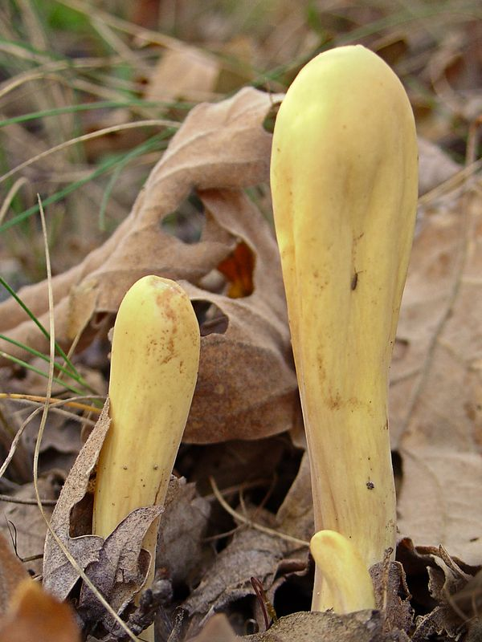

Herkuleskeule
Clavariadelphus pistillaris
In den Laubwäldern der Riedflanken kann der Pilzfreund zuweilen auf die eigenwillig geformte Herkuleskeule treffen. Dieser Pilz ist ungenießbar.
In den Laubwäldern der Riedflanken kann der Pilzfreund zuweilen auf die eigenwillig geformte Herkuleskeule treffen. Dieser Pilz ist ungenießbar.